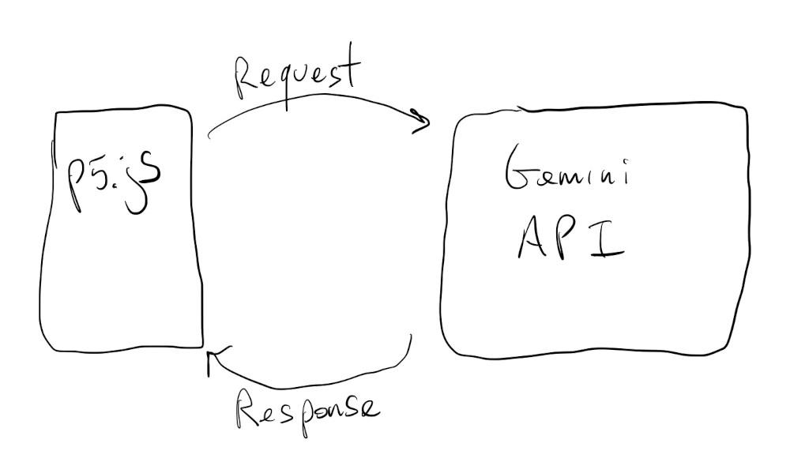
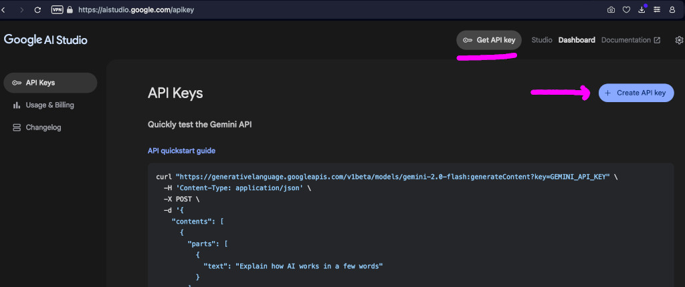
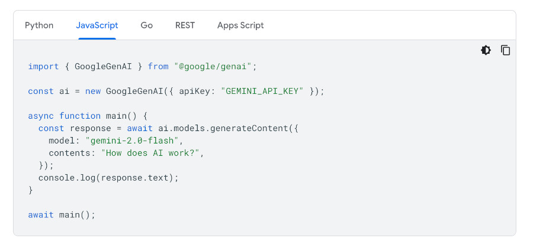

Ok. Let’s look at even bigger models!
Hugging Face and Gradio apps are really good ways to experiment with open source models, but sometimes we might want to look at some of the commercial models, like chatGPT or Gemini.
The process/code is similar to how we used models through Gradio because we’ll need to make API requests to servers:

Let’s take a look at how to use Google’s Gemini models to describe images.
We’ll start with the plain Transformers.js image description sketch we had a few tutorials back:
Let’s remove the Transformers.js code and get the sketch ready for a new model:
We’ve also added a text input field for pasting a Gemini “API key”.
What’s an API key ? It’s how companies keep track of who is using their APIs and services. In this case, it’s how Google keeps track of how often we use Gemini and if we’re not going over any of the limits of their free tier.
In order to get an API key we have to be logged into a Google account and start an AI Studio project here. Clicking on the Get API key button and then the + Create API key button should be enough to start a project and get a key.

We have to save this key somewhere safe. It’s like a password for logging into the Gemini servers.
Now, we can head over to the Gemini API documentation here, and see how to add a Gemini client to our p5.js sketch.

Again, we’ll have to adapt this to work in a p5.js sketch. It’s not that bad.
Because we need an API key when creating a GoogleGenAI object, we’ll just put most of our model code inside the describeFrame() function. Even the code that sets up the model.
This way, when we hit the Describe button for the first time, our gemini variable will be un-instantiated, and we’ll load the library, read the API key value from the text box, and create a GoogleGenAI object:
if (!gemini){
let module = await import(gUrl);
gemini = new module.GoogleGenAI({ apiKey: apiText.value });
}
Here’s the code so far. Same as before, but different:
If we dig around the API documentation enough, eventually we’ll find this bit of code that describes how to send images to the model.
Again, we have to adapt this to p5.js.
The first thing we have to do is make sure our image’s dataURL is in jpeg format, and remove the header that specifies that it’s in jpeg format:
let imgUrl = mCamera.canvas
.toDataURL("image/jpeg")
.replace("data:image/jpeg;base64,", "");
Then we can create an image data object:
let imgData = {
data: imgUrl,
mimeType: "image/jpeg",
};
And, finally, call the model with the image data and a prompt asking it to describe the image:
let response = await gemini.models.generateContent({
model: "gemini-2.0-flash",
contents: [
{ text: "Describe this image" },
{ inlineData: imgData }
],
});
The description will be in response.text.
Now we can run this sketch and get some descriptions from Gemini. We just have to make sure we have our API key in the text box:
Chatting with the model is even easier, in terms of the code. It can be exactly the same as above, but we don’t need to encode an image:
let response = await gemini.models.generateContent({
model: "gemini-2.0-flash",
contents: [
{ text: "Why is the sky blue?" }
],
});
Here’s a sketch with an extra text box for inputting questions to the model: